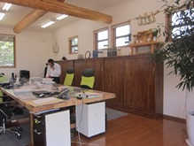

新潟県三条市のいずみ税理士法人
ＴＫＣ全国会は、租税正義の実現をめざし関与先企業の永続的繁栄に奉仕するわが国最大級の職業会計人集団です。
私事ではありますが、長岡市（旧栃尾市）人面（ひとづら）に住んでおります。
私たちは、今与えられた地球上のあらゆる資源を最大限に活かし、自由と公正なる国家を目指し税法の担い手として、郷土中小企業の発展に尽くします。
ＴＫＣ全国会の基本理念である「自利利他」について、ＴＫＣ全国会創設者飯塚毅は次のように述べています。
大乗仏教の経論には「自利利他」の語が実に頻繁に登場する。解釈にも諸説がある。その中で私は「自利とは利他をいう」（最澄伝教大師伝）と解するのが最も正しいと信ずる。
仏教哲学の精髄は「相即の論理」である。般若心経は「色即是空」と説くが、それは「色」を滅して「空」に至るのではなく、「色そのままに空」であるという真理を表現している。
同様に「自利とは利他をいう」とは、「利他」のまっただ中で「自利」を覚知すること、すなわち「自利即利他」の意味である。他の説のごとく「自利と、利他と」といった並列の関係ではない。
そう解すれば自利の「自」は、単に想念としての自己を指すものではないことが分かるだろう。それは己の主体、すなわち主人公である。
また、利他の「他」もただ他者の意ではない。己の五体はもちろん、眼耳鼻舌身意の「意」さえ含む一切の客体をいう。
世のため人のため、つまり会計人なら、職員や関与先、社会のために精進努力の生活に徹すること、それがそのまま自利すなわち本当の自分の喜びであり幸福なのだ。
そのような心境に立ち至り、かかる本物の人物となって社会と大衆に奉仕することができれば、人は心からの生き甲斐を感じるはずである。
毎月、会計専門家が貴社を訪問し、次の業務を支援します。
当事務所の宴会部長です。
趣味が人の輪を作ります。友人知人を大切にしています。
| 事務所名 | いずみ税理士法人 |
|---|---|
| 所長名 | 代表社員税理士 片山和郎 |
| 所在地 | 新潟県三条市泉新田３０２８番地 |
| 電話番号 | 0256-45-7310 |
| FAX番号 | 0256-45-7305 |
| メールアドレス | mac-con@tkcnf.or.jp |
| 駐車場 | 有 |
| 業務内容 |
|

税務、会計はもちろん他の些細なことでもお悩みのことがございましたらお気軽に当事務所までご相談下さい。